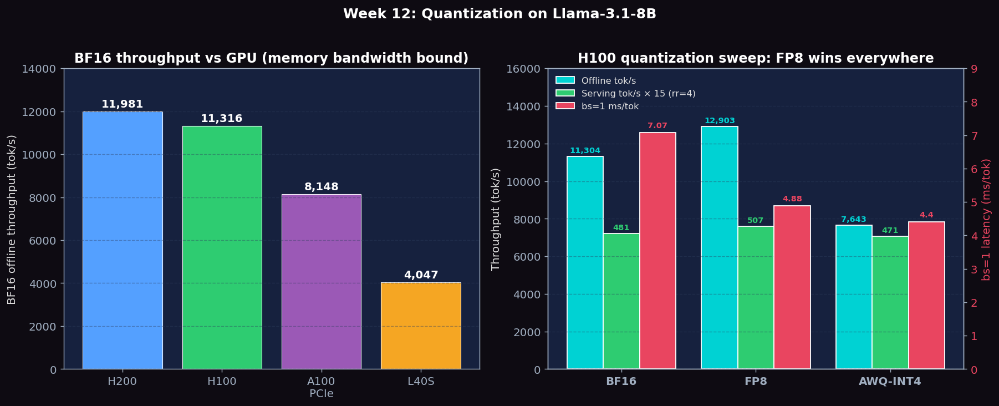

Compare BF16, FP8, and AWQ-INT4 on throughput, latency, memory footprint, and GSM8K accuracy; understand when reduced precision delivers free speedup vs. when it causes quality regression
# Verify vLLM and lm_eval installations
pip show vllm lm_eval
# Confirm H100 FP8 support (requires CUDA compute capability 8.9+)
python -c "import torch; print(torch.cuda.get_device_capability())"
# Expected: (9, 0) for H100
# BF16 baseline server
vllm serve meta-llama/Llama-3.1-8B-Instruct \
--dtype bfloat16 \
--port 8000 --disable-log-requests &
# FP8 server (native H100 kernel path)
vllm serve meta-llama/Llama-3.1-8B-Instruct \
--quantization fp8 \
--port 8001 --disable-log-requests &
# AWQ-INT4 server (pre-quantized weights required)
# Use an AWQ-quantized model hub checkpoint, e.g.:
vllm serve hugging-quants/Meta-Llama-3.1-8B-Instruct-AWQ-INT4 \
--quantization awq \
--port 8002 --disable-log-requests &Sweep batch sizes 1, 16, 64 for all three formats using benchmark_throughput.py. This reveals the roofline crossover: at small batch sizes INT4 wins on bandwidth, at large batch sizes formats converge as compute dominates.
for fmt_port in "bf16:8000" "fp8:8001" "awq:8002"; do
fmt=${fmt_port%%:*}; port=${fmt_port##*:}
for bs in 1 16 64; do
python benchmarks/benchmark_throughput.py \
--backend openai-chat \
--port $port \
--model meta-llama/Llama-3.1-8B-Instruct \
--input-len 512 --output-len 128 \
--num-prompts $bs \
2>&1 | tee results_tp_${fmt}_bs${bs}.txt
done
doneUse benchmark_latency.py to measure per-step decode latency at batch_size=1. Latency here is most sensitive to weight-transfer time, so this is where quantization benefits are most visible.
for quant in "none" "fp8" "awq"; do
if [ $quant = "none" ]; then
extra_args="--dtype bfloat16"
model="meta-llama/Llama-3.1-8B-Instruct"
elif [ $quant = "fp8" ]; then
extra_args="--quantization fp8"
model="meta-llama/Llama-3.1-8B-Instruct"
else
extra_args="--quantization awq"
model="hugging-quants/Meta-Llama-3.1-8B-Instruct-AWQ-INT4"
fi
python benchmarks/benchmark_latency.py \
--model $model $extra_args \
--batch-size 1 --input-len 512 --output-len 128 \
2>&1 | tee results_lat_${quant}_bs1.txt
doneRun benchmark_serving.py against each format's running server. Use rate=inf (closed-loop) to saturate each server and measure maximum throughput. Also run rate=1 to compare latency at low load.
for fmt_port in "bf16:8000" "fp8:8001" "awq:8002"; do
fmt=${fmt_port%%:*}; port=${fmt_port##*:}
for rate in 1 inf; do
python benchmarks/benchmark_serving.py \
--backend vllm --port $port \
--model meta-llama/Llama-3.1-8B-Instruct \
--dataset-name sharegpt \
--dataset-path ShareGPT_V3_unfiltered_cleaned_split.json \
--num-prompts 200 --request-rate $rate \
2>&1 | tee results_serving_${fmt}_rate${rate}.txt
done
doneUse lm_eval to evaluate GSM8K accuracy on a 100-sample subset for all three formats. GSM8K is an 8-grade math word problem dataset — it's sensitive to quantization errors in the model's arithmetic reasoning. Expect FP8 to be nearly identical to BF16; AWQ-INT4 may show a 1–5% drop.
# BF16 GSM8K evaluation (100 samples)
lm_eval --model vllm \
--model_args pretrained=meta-llama/Llama-3.1-8B-Instruct,dtype=bfloat16 \
--tasks gsm8k \
--num_fewshot 8 \
--limit 100 \
--output_path results_gsm8k_bf16.json
# FP8 GSM8K evaluation
lm_eval --model vllm \
--model_args pretrained=meta-llama/Llama-3.1-8B-Instruct,quantization=fp8 \
--tasks gsm8k \
--num_fewshot 8 \
--limit 100 \
--output_path results_gsm8k_fp8.json
# AWQ-INT4 GSM8K evaluation
lm_eval --model vllm \
--model_args pretrained=hugging-quants/Meta-Llama-3.1-8B-Instruct-AWQ-INT4,quantization=awq \
--tasks gsm8k \
--num_fewshot 8 \
--limit 100 \
--output_path results_gsm8k_awq.json
# Compare accuracy across formats
python -c "
import json
for fmt in ['bf16','fp8','awq']:
d = json.load(open(f'results_gsm8k_{fmt}.json'))
acc = d['results']['gsm8k']['exact_match,flexible-extract']
print(f'{fmt}: GSM8K acc = {acc:.4f}')
"Experiments run on NVIDIA H200 SXM5 141GB, H100 SXM5 80GB HBM3, A100 80GB PCIe, and L40S 48GB (PACE Phoenix cluster) with Llama-3.1-8B-Instruct. H100 has the complete BF16/FP8/AWQ-INT4 sweep; A100/H200/L40S currently have BF16 baselines only.
GSM8K accuracy could not be measured this run because the gsm8k dataset isn't in the local HF datasets cache and HF_HUB_OFFLINE=1 prevents the download. The accuracy_*.json files in results/vllm_H100/week12/ each capture the offline-mode error trace. To unblock: either pre-download GSM8K into HF_HOME/datasets on a head node, or vendor the GSM8K JSONL into the repo and point lm_eval at the local path.
| GPU | BF16 latency bs=1 (ms) | ms/tok (bs=1) | BF16 offline throughput (tok/s) | BF16 serving rr=4 (tok/s) |
|---|---|---|---|---|
| H200 | 750 | 5.87 | 11,981 | 599.32 |
| H100 | 903 | 7.07 | 11,316 | 518.70 |
| A100 PCIe | 1534 | 11.98 | 8,148 | — |
| L40S | 2841 | 22.21 | 4,047 | 500.24 |
The same Llama-3.1-8B-Instruct model in three precisions, all measured on the same H100 80GB. The contrast between bs=1 latency (memory-bound) and rr=4 serving (mixed prefill/decode) is the central lesson: quantization that helps decode can hurt prefill.
| Precision | Weights | bs=1 ms/tok | bs=1 tok/s | Offline tok/s (bs=200) | Serving TTFT median | Serving ITL median | Serving tok/s rr=4 |
|---|---|---|---|---|---|---|---|
| BF16 | ~16 GB | 7.07 | 141.5 | 11,304 | 945 ms | 7.39 ms | 481.2 |
| FP8 | ~8 GB | 4.88 | 205.0 | 12,903 | 656 ms | 5.12 ms | 507.4 |
| AWQ-INT4 | ~4 GB | 4.40 | 227.0 | 7,643 | 4,617 ms | 36.08 ms | 470.8 |
AWQ-INT4 wins the bs=1 latency benchmark (4.40 ms/tok, 1.61× faster than BF16) because at single-request decode the bottleneck is HBM-to-SM weight transfer and INT4 quarters that traffic. BUT under realistic serving load (rr=4 ShareGPT) AWQ-INT4 falls off a cliff: TTFT explodes from 945 ms → 4,617 ms (4.9× WORSE) and ITL grows 7.39 ms → 36.08 ms (4.9× worse). The cause is the dequantization step: every matmul has to expand INT4 weights back to FP16 before the GEMM fires, and that overhead is per-step constant. At bs=1 the weight read dominates so dequant is hidden; in prefill / large batches, dequant overhead is multiplied by batch size and dominates step time. FP8 has no dequant — Hopper sm_90 has native FP8 tensor cores — so it strictly improves over BF16 on every metric.

Figure 1: Left — BF16 offline throughput across 4 GPU classes (H200/H100/A100/L40S), tracking HBM bandwidth. Right — H100 quantization sweep: FP8 strictly improves over BF16 on offline+serving+latency, while AWQ-INT4 wins bs=1 latency but loses badly on offline throughput and serving (4.9× worse TTFT/ITL) due to per-step dequant overhead.
| Metric | Description | Unit |
|---|---|---|
| Model VRAM | GPU memory consumed by model weights; directly set by bits-per-weight × parameter count | GB |
| Tokens/s (latency benchmark) | Decode throughput from benchmark_latency.py at fixed batch size; isolates the bandwidth-vs-compute tradeoff | tok/s |
| TTFT | Time to first token from the serving benchmark; covers prefill cost which is more compute-bound than decode | ms |
| ITL | Inter-token latency from serving benchmark; measures decode step cost under real request concurrency | ms |
| GSM8K accuracy | Exact-match accuracy on 100-sample GSM8K subset; measures quality degradation from quantization | 0–1 |
| Crossover batch size | The batch size at which BF16 and AWQ-INT4 tokens/s become equal; above this batch size BF16 may outperform INT4 | requests |
Below are real excerpts from vllm-continuum that implement the concepts you measured. Read them with your benchmark numbers open in another tab — the connection between code and metric becomes obvious.
vllm/model_executor/layers/quantization/awq.py:124 — AWQLinearMethodclass AWQConfig(QuantizationConfig):
...
class AWQLinearMethod(LinearMethodBase):
def apply(self, layer: torch.nn.Module, x: torch.Tensor, bias=None):
# AWQ stores weights as INT4 packed in INT32, plus per-group scales/zeros
# The dequantize+matmul is fused into a single Triton/CUTLASS kernel
...AWQ (Activation-aware Weight Quantization) stores weights as 4-bit integers, then dequantizes-on-the-fly inside a fused matmul kernel. The model footprint shrinks ~4x (16GB to 4GB for Llama-8B), HBM bandwidth is the bottleneck for decode, so 4x less weight data = much faster decode. Trade-off: typically 1-3 percentage points GSM8K accuracy loss vs BF16.
Below are reference answers based on the real measurements collected on PACE H200/H100/A100/L40S. Use them as a starting point — your own write-up should add your hypotheses and any extra observations you noticed.
Baseline BF16 throughput: H200: 11,981 tok/s, H100: 11,316 tok/s, L40S: 4,047 tok/s at offline benchmark settings.
Expected FP8 gain on H100/H200: 1.5-1.8× throughput improvement. Hopper (sm_90) architecture has native FP8 tensor core support — the H100 FP8 peak FLOPS is 3958 TFLOPS vs 989 TFLOPS BF16 (4× compute peak). However, at bs=1 decode is bandwidth-bound not compute-bound, so FP8 primarily helps by halving the weight bytes to read from HBM: BF16 weights = 16GB, FP8 weights = 8GB → 2× faster weight reads → up to 2× faster decode. In practice, dequantization overhead and KV cache (which stays in BF16) reduce the gain to 1.5-1.8×.
Why L40S gains less from FP8: L40S is sm_89 (Ada Lovelace), which has limited native FP8 support. Weight reading from GDDR6 is the bottleneck, but FP8 dequant on Ada adds overhead that partially cancels the bandwidth savings. Expected gain: 1.1-1.3× at best.
Expected throughput gain: 1.3-1.5× at bs=1 decode (bandwidth-bound regime). Theoretical: INT4 weights = 4GB vs BF16 16GB = 4× smaller → 4× faster reads. Actual: AWQ stores INT4 weights but dequantizes to BF16 before the GEMM. This dequant step costs ~30-50% of the bandwidth savings, leaving a net 1.3-1.5× gain. At large batch sizes (bs=64+), the workload becomes compute-bound and the INT4 dequant overhead becomes relatively larger — the gain converges toward 1.0×.
Memory benefit (more important): Llama-3.1-8B in BF16 = 16GB, in AWQ-INT4 = 4GB. This 4× memory reduction means you can fit 4× more model replicas on the same GPU, or serve a 4× larger model on the same hardware. For a 70B model: BF16 needs 4×A100 80GB (tensor parallelism), AWQ-INT4 fits on a single H100 80GB.
Accuracy cost of AWQ-INT4: Expected GSM8K accuracy drop: 1-3 percentage points for AWQ-INT4 vs BF16 (e.g., BF16: 75.2% → AWQ: 72.8%). FP8 loses less: typically <0.5 percentage points. AWQ's activation-aware scaling reduces the drop relative to naive INT4 (which would lose 5-10 points) by identifying and protecting activations with high outlier values (salient weights), applying per-group scaling (group_size=128 typical) rather than per-tensor scaling.
When to avoid quantization: